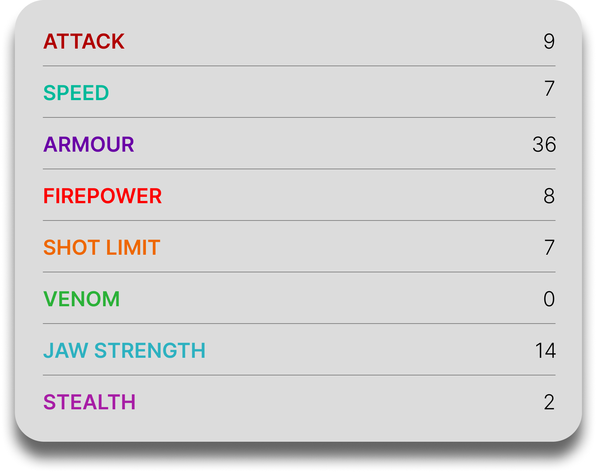

Eruptodon
General Overview
The Eruptodon is a large dragon belonging to the Boulder Class. Known as one of the most unique dragons in existence, it is famous for its ability to consume lava and regulate volcanic activity. Often revered as a guardian, the Eruptodon protects entire islands by preventing eruptions, making it less of a destructive force and more of a natural stabilizer within its environment.

Physical Appearance
- Body & Color: It has a large, rounded body covered in hardened volcanic rock, usually gray with glowing lava-like colors beneath the surface.
- Head & Face: Its head is broad with small, heat-protected eyes adapted to volcanic environments.
- Appendages: It has small forelimbs and stronger hind legs, built more for stability than speed.
- Wings & Tail: Its wings are large and capable of flight despite its heavy build, while its thick tail helps maintain balance.
Abilities and Combat
- Lava Consumption: It feeds on lava, absorbing and neutralizing volcanic flows before they can cause destruction.
- Volcano Control: By living inside magma vents, it can prevent eruptions and regulate volcanic pressure.
- Feeding Frenzy: If it goes too long without lava, it becomes uncontrollable and will search aggressively for magma sources.
- Tunneling: It can dig into dormant volcanoes to reach lava, sometimes triggering eruptions in the process.
- Heat Resistance: Its body is fully adapted to extreme heat, allowing it to survive in molten environments.
- Defensive Strength: While not primarily a fighter, its size and rocky armor provide strong natural defense.
Behavior and Personality
- Intelligence: It shows awareness of its environment and acts with purpose when maintaining volcanic balance.
- Temperament: It is generally calm and passive, rarely engaging in unnecessary conflict.
- Behavior: It lives within or near volcanoes, constantly monitoring and feeding on lava to maintain stability.
- Protective Nature: It can display protective instincts toward entire regions or populations living nearby.
- Diet: Their diet consists entirely of lava, which they require to survive.